固定 IP + 清单式内容 + 四大支柱全覆盖
不追热点，而是围绕目标人群（18–30 岁、有健康 / 外貌焦虑的女性）的长期需求，用「可枚举、可执行、可收藏」的结构反复触达，把不确定的爆款变成可批量生产的稳定动作。
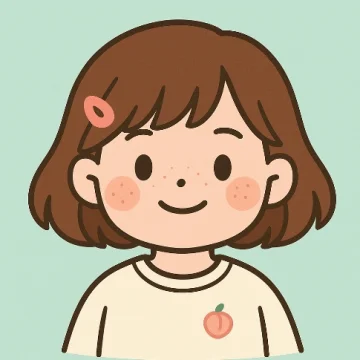
账号的核心增长逻辑不是某一条爆文，而是一套稳定的内容生产系统：同一个治愈系 IP 形象，配不同场景道具（身高尺 / 床 / 日历 / 桌面），搭配「数字 + 清单 + 强情绪词」的标题公式（8 大行为 / 12 个习惯 / 100 件小事），覆盖 18–30 岁女性最关心的四大健康支柱——运动、睡眠、饮食、情绪。每篇换话题但保持同一结构与视觉识别度，复用提升的是「命中概率」，而不是保证每篇都爆。
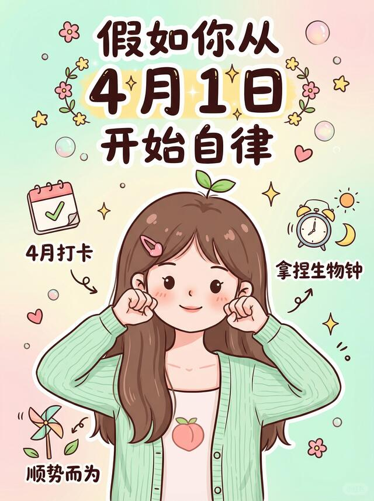
「假如你从 X 月开始自律」时间锚点模板是该账号当前最强的爆款资产：4 月版拿到 1 万赞（全账号第一），但同结构的 5 月版仅 625 赞——模板吸引力已被验证，最终数据则高度依赖发布时机与细节。
查看原笔记 ↗不追热点，而是围绕目标人群（18–30 岁、有健康 / 外貌焦虑的女性）的长期需求，用「可枚举、可执行、可收藏」的结构反复触达，把不确定的爆款变成可批量生产的稳定动作。
统一 IP 形象 + 场景化封面 + 薄荷绿治愈配色形成强记忆点，用户刷到就知道是「那个养生女孩」。标题公式稳定（数字 + 清单 + 强情绪词），既降低创作决策成本，又保证输出一致性。
30 篇可见样本点赞从 38 到 1 万，跨度约 263 倍。保险 / 转运 / 通用幸福感等选题明显偏离核心受众，拉低了整体稳定性——账号尚未把火力完全收敛到已验证的爆款赛道。
公开主页未返回每篇的发布时间戳，因此以下不是时间线，而是对 30 篇可见笔记的主题聚类。若要精确的账号演化分期，需要逐篇进入笔记详情页取创建时间。
代表：「4 月自律」1万、「长高八大行为」5050、「入睡法」2110、「12 个习惯多出 3 小时」1185。
拿到全账号前几名，是账号的基本盘与增长引擎。
代表：「AI 黄金便便公式」1592、「戒糖逆袭冷白皮」277、「痛经 10 件小事」245、「高颅顶」349。
数据中等偏稳，是维持更新节奏与收藏量的腰部内容。
代表：「保险这样买」38、「转运 50 件小事」308、「幸福感 100 件小事」52。
偏离核心受众，数据普遍垫底，是应当削减的方向。
把 30 篇按点赞排序后，能清晰看到哪些「选题模板」是可复用的高命中资产，哪些只是偶发。下表为可见样本的完整排序（点赞为公开可见值）。
① 时间锚点自律：「假如你从 X 月开始自律…」
② 无意识变好：「无意识长高的八大行为」「12 个习惯多出 3 小时」
③ 睡眠 / 身体刚需：「史上最爽入睡法」「黄金便便公式」
| 排名 | 标题 | 点赞 | 原笔记 |
|---|---|---|---|
| 1 | 假如你从4 月1日开始自律，悄悄超越同龄人 | 1万 | 链接未获取（SSR 无 noteId） |
| 2 | 无意识长高的八大行为，偷偷蹿个儿 | 5050 | 链接未获取（SSR 无 noteId） |
| 3 | 睡不着进！史上最爽入睡法，一觉到天明 | 2110 | 链接未获取（SSR 无 noteId） |
| 4 | 谁还没试过！AI给的黄金便便公式也太懂我了 | 1592 | 链接未获取（SSR 无 noteId） |
| 5 | 这12个习惯，让你每天多出3小时 | 1185 | 链接未获取（SSR 无 noteId） |
| 6 | 假如你从5 月1日开始自律，夏天会发生什么 | 625 | 链接未获取（SSR 无 noteId） |
| 7 | 建议：多去做疯狂长脑子的行为 | 586 | 链接未获取（SSR 无 noteId） |
| 8 | 2026 普通人入局养生赛道，看这篇就够了 | 567 | 链接未获取（SSR 无 noteId） |
| 9 | 大美女只吃这些高级的苦，坚持1个月蜕变 | 431 | 链接未获取（SSR 无 noteId） |
| 10 | 脸黄长痘别只怪护肤品！熬夜女生必看 | 368 | 链接未获取（SSR 无 noteId） |
| 11 | 如何正确洗出蓬松高颅顶，一篇说清楚 | 349 | 链接未获取（SSR 无 noteId） |
| 12 | 周末可以做的N件事（单人版） | 321 | 链接未获取（SSR 无 noteId） |
| 13 | 人转运最快的50件小事，扔掉后磁场更干净了 | 308 | 链接未获取（SSR 无 noteId） |
| 14 | 戒糖了脸还是黄？13 个习惯轻松逆袭冷白皮 | 277 | 链接未获取（SSR 无 noteId） |
| 15 | 痛经女孩必看！坚持10件小事，小腹超舒服✨ | 245 | 链接未获取（SSR 无 noteId） |
| 16 | 气血不足的人，每天固定的12个运动 | 196 | 链接未获取（SSR 无 noteId） |
| 17 | 一个月内提升免疫力，把小毛病全赶走！ | 190 | 链接未获取（SSR 无 noteId） |
| 18 | 经常熬夜的人，这些地方会巨臭！ | 168 | 链接未获取（SSR 无 noteId） |
| 19 | 一些不正经却很有效的变美小tips | 138 | 链接未获取（SSR 无 noteId） |
| 20 | 面部不显老的8个小技巧，建议女生死磕 | 125 | 链接未获取（SSR 无 noteId） |
| 21 | 女性微有攻击性的小习惯，建议女生死磕 | 119 | 链接未获取（SSR 无 noteId） |
| 22 | 修复前额叶，无痛长脑的12个小习惯 | 111 | 链接未获取（SSR 无 noteId） |
| 23 | 一定要养好你的心脏（建议收藏） | 79 | 链接未获取（SSR 无 noteId） |
| 24 | 普通人逆袭最快的方式：早起！ | 62 | 链接未获取（SSR 无 noteId） |
| 25 | 总是痛经？给女生改善经期不适的Tips | 61 | 链接未获取（SSR 无 noteId） |
| 26 | 夏天提升幸福感的100件小事🌈 | 52 | 链接未获取（SSR 无 noteId） |
| 27 | 压力很大时，求你去做这10件小事✨ | 52 | 链接未获取（SSR 无 noteId） |
| 28 | 坚持这15件小事，脸蛋耐看度+100%💯 | 49 | 链接未获取（SSR 无 noteId） |
| 29 | 身体巨健康的20个表现，你占了几个？ | 49 | 链接未获取（SSR 无 noteId） |
| 30 | 月薪5000+给全家人的保险这样买最省钱 | 38 | 链接未获取（SSR 无 noteId） |
基于 30 篇可见样本，从选题、标题、封面、结构、人设五个维度给出评级与可执行动作。
四大支柱定位清晰，但混入保险 / 转运 / 泛幸福感等低相关选题，稀释了账号标签。
动作：砍掉玄学 / 金融 / 泛生活选题，把 80% 产能压在自律 · 睡眠 · 外貌变好三条线。
「数字 + 清单 + 强情绪词」公式稳定，时间锚点（假如你从 X 月开始）与身体钩子（巨臭 / 黄金便便）钩子力强。
动作：固化「时间锚点 / 无意识变好 / 反常识身体信号」三套标题母版，滚动复用。
统一 IP 形象 + 场景道具 + 薄荷绿配色，一眼可辨；高赞封面道具与主题强绑定（日历 / 身高尺 / 床）。
动作：把「大字主标题 + IP + 单一道具」定为封面模板，避免信息过载。
清单体天然利于收藏，但同质化高，缺少系列化 / 连载钩子来拉动关注转化。
动作：给主力赛道做成「系列 EP01/02…」，在结尾引导关注追更。
「百岁少女」IP 与「松弛不内耗」价值主张一致，人设即品牌，是账号最难被复制的护城河。
动作：强化 IP 口头禅 / 固定栏目，把人设从「封面形象」升级为「内容语气」。
以下均为账号真实封面（已实际查看核对）。共性：薄荷绿 / 粉的治愈配色 + 手绘 IP 女孩 + 一句大字主标题 + 单一场景道具。高赞封面的主标题更短、情绪更强、道具与主题强绑定。
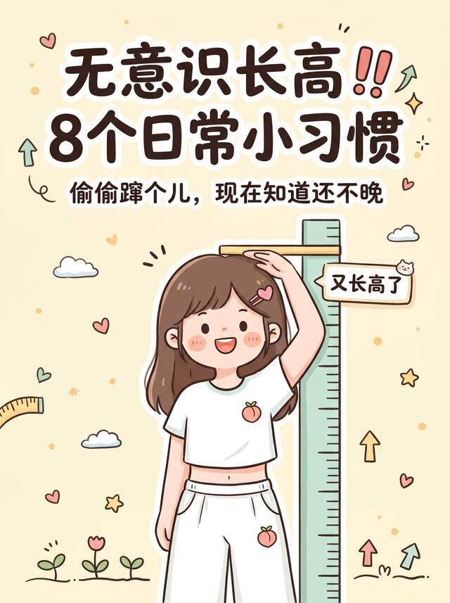
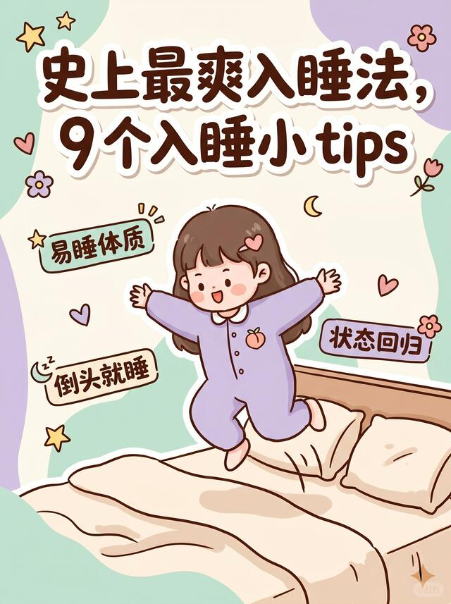
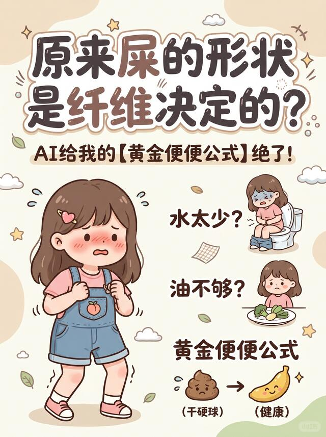
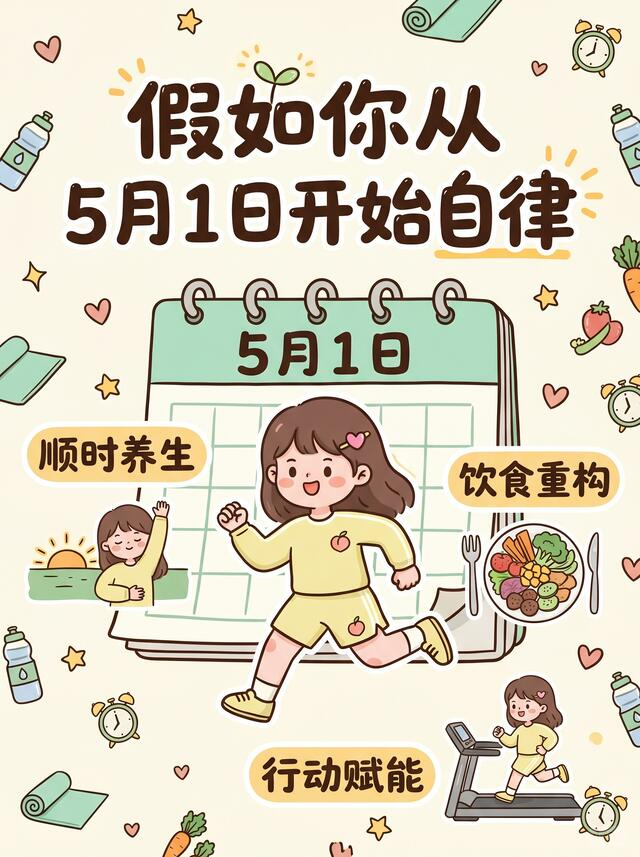
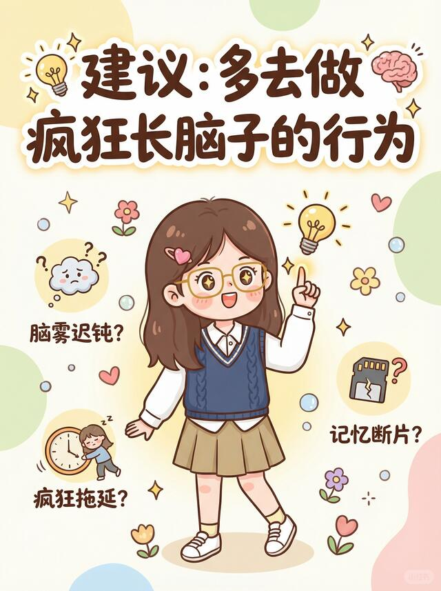
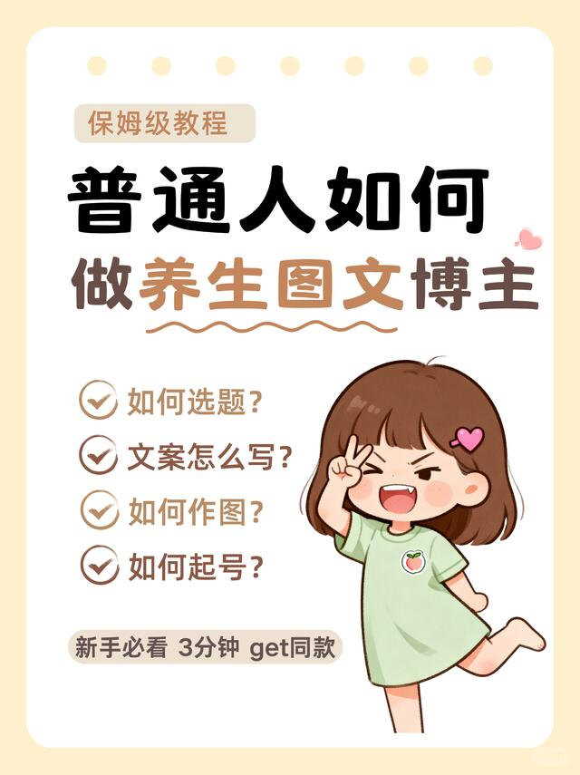
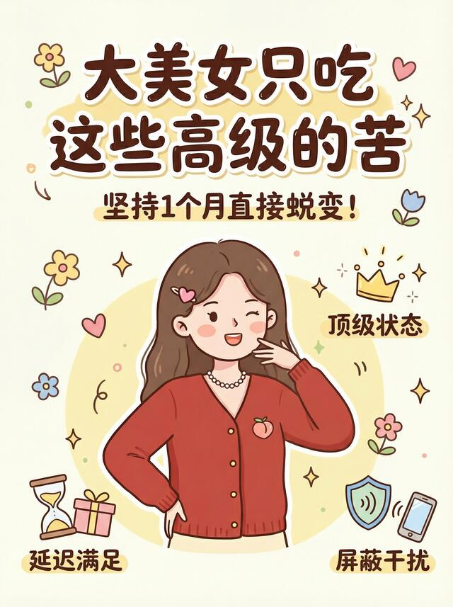
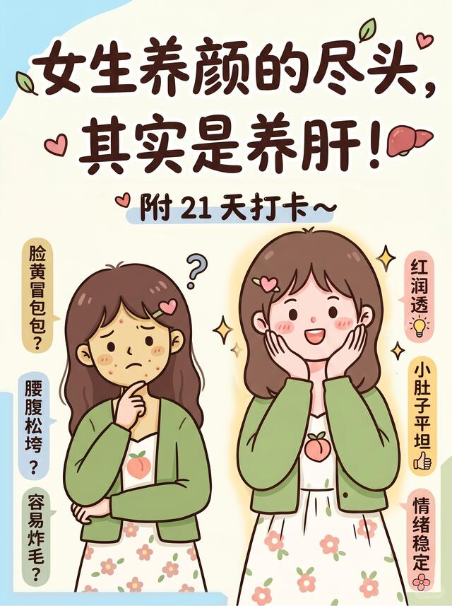
时间锚点 + 「悄悄超越同龄人」的对比诱惑；日历道具直给场景，主标题一句话说清收益。
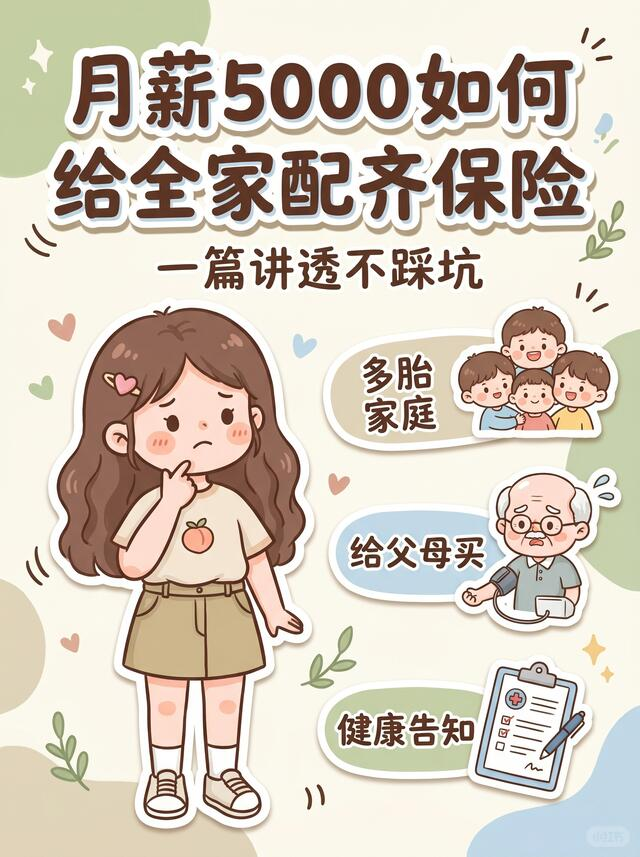
保险 / 理财偏离养生人设，「月薪 5000」缺少情绪张力与身体收益钩子，与账号标签错位。
把该账号验证过的规律抽象成可直接套用的公式与清单。
爆款笔记 =
【时间 / 身体锚点】（假如你从X月 / 无意识 / 坚持N天）
+ 【数字清单】（8 大行为 / 12 个习惯 / 10 件小事）
+ 【强情绪收益】（悄悄超越同龄人 / 一觉到天明 / 冷白皮）
+ 【女生刚需支柱】（睡眠 / 外貌 / 自律 / 经期）
+ 【统一 IP 封面】（手绘女孩 + 薄荷绿 + 单一道具 + 大字主标题）时间锚点标题母版、清单体结构、统一 IP + 薄荷绿封面系统。
主力赛道系列化连载、结尾关注引导、封面主标题再精简。
保险 / 转运 / 泛幸福感等偏离人设选题；封面信息过载。
健康科普赛道的红线，照抄前必须先守住。
养生 / 习惯类内容不得宣称治疗、治愈或替代就医；「改善」「缓解」需谨慎并标注个体差异。
科普结论尽量给出可信来源，避免把个人经验包装成「官方 / 医学定论」。
保险 / 理财等金融建议需资质，普通养生号不宜涉足，也与人设错位。
封面 IP、配色、模板可借鉴方法论，但不得直接盗用他人素材与图片。
把以上拆解转成一套可执行的冷启动到成长路径。
学它的「标题母版 + 封面模板 + 支柱矩阵」这套可复制系统，而不是抄某一条爆文。
第一步不是追爆款，而是定下 IP 形象、主色（如薄荷绿）、标题公式三件套，形成一眼可辨的识别度。
发 10–15 篇覆盖自律 / 睡眠 / 外貌三赛道，快速测出自己的高命中母题。
目标：跑出 2–3 条 500+ 赞的验证性笔记。
把跑通的标题母版做成系列连载，结尾引导关注，稳定周更节奏。
目标：单条稳定破千，涨粉进入正循环。
沉淀固定栏目 / 口头禅，逐步接入选品或知识付费等变现。
目标：把内容资产转成商业资产。
70% 主力赛道（自律 / 睡眠 / 外貌变好）保命中；20% 女性刚需（经期 / 护肤 / 肠道）维稳；10% 试探新母题，验证后再放大。
· 假如你从 8 月开始早睡，开学时会发生什么
· 无意识变瘦的 7 个日常小动作
· 坚持 21 天，皮肤肉眼可见变透亮的清单
本报告基于 2026-07-21 抓取的公开主页数据，来源为主页 HTML 内嵌的 __INITIAL_STATE__（浏览器访问公开页时同样加载的内容，未绕过登录 / 风控）。共解析 30 篇可见笔记的标题、点赞与封面。局限：公开载荷未包含粉丝数、每篇发布时间戳与笔记详情页 noteId，因此不做时间线演化与逐篇跳转链接，相关处已如实标注。
· 账号主页：https://www.xiaohongshu.com/user/profile/5efb299c0000000001004b93
· 30 篇笔记封面：均已本地化并实际查看核对
· 分析框架：ache-chaijie-skill 内置小红书拆解方法论